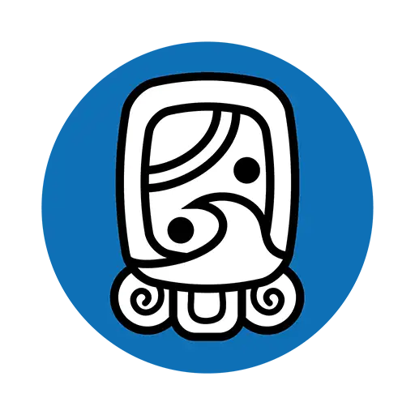

Private Coba Ruins & Cenote Tour
Explore Coba and the Nohoch Mul pyramid, then swim in Tankach-Ha cenote.
View Tour
Safe. Personalized. Exclusive.
Find Your Private TourEvery tour is 100% private, tailor-made for you and your group.
Explore Coba and the Nohoch Mul pyramid, then swim in Tankach-Ha cenote.
View TourFull day at one of the New Seven Wonders, with a cenote swim and regional lunch.
View TourTulum ruins plus two cave cenotes to swim in, all in one day.
View TourSwim with sea turtles in Akumal Bay, then explore two cave cenotes.
View TourPrivate tours, airport transportation and local advice, all in one place.
Want to explore our top attractions? Check our exclusive excursions.
Looking for a reliable and safe transfer? Arrive relaxed with our premium, door-to-door service.
Need local advice for planning your upcoming vacations? We’re here to help!
Exclusive offers for our guests on private tours from Cancun, Riviera Maya and Tulum.
AVOID THE CROWDS, SKIP THE LINES, AND DISCOVER EXCLUSIVE LOCATIONS
We know that finding an honest and reliable private tour company in the Riviera Maya can be confusing. You want a fun, easy trip for you and your family, with no stress, no crowds, and no surprises. At Xaman-Ha Connections®, your comfort and exclusivity come first. Every tour is 100% private, tailor-made for you, and backed by over 2,800 five-star reviews.
NEW DESTINATIONS
The same private, all-inclusive experience you trust in the Riviera Maya, now available in three new destinations across Mexico.
Celebrating 10 Years of Exceptional Private Services. Featured in Forbes and Kayak. Ranked #1 on TripAdvisor.
We did the Tulum ruins express tour with lunch, and Jesus was our guide. Absolutely fantastic experience all the way around! He was extremely knowledgeable and friendly and allowed us to craft exactly the tour we wanted.
Michele M. · Posted on GoogleTapia was an amazing guide - the cenotes were gorgeous, and the service was great. The lunch spot Tapia picked was also perfect! Highly recommend this trip!
Verified traveler · Posted on TripadvisorGetting the private tour was worth every penny. After the heat at Chichen Itza, a cool swim in the cenote was exactly what we needed. It was such a unique experience in a beautiful setting.
Karen F. · Posted on Google